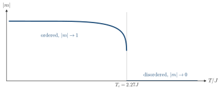

Advanced Quantum Materials 2027 · All lectures · Lecture notes
Session 10. Machine Learning Quantum Materials
10.6a Phase classification with local order parameters and topological order
We now come to a section that is, in a real sense, a review of the classification scheme of the whole course, seen from the point of view of machine learning. In this course we have used two quite different tools to distinguish phases. Sessions 1, 5, and 6 used a local order parameter, which is a quantity built from a simple local expectation value that is zero in one phase and nonzero in the other. Examples are the charge imbalance for the CDW, the magnetization for the magnet and the pairing amplitude for the superconductor. Sessions 3 and 4 instead used a topological invariant, such as the Chern number or the Zak phase, because the phases there are not distinguished by any local quantity at all, and the difference can only be seen in a non-local way. The phase-classification example of this session uses this contrast as an “easy” and a “hard” worked example of machine learning, and the lecture itself presents it in this way.
The easy case, the Ising model. Let us take classical Ising spins \(\sigma_i = \pm 1\) on a square lattice, with the standard nearest-neighbor Hamiltonian and a local order parameter,
\[H_{\rm Ising} = -J\sum_{\langle i,j\rangle} \sigma_i \sigma_j, \qquad m = \frac{1}{N}\sum_i \sigma_i, \tag{10.9}\]
which has ferromagnetic order (\(|m|\to 1\)) below a critical temperature \(T_c\) and is disordered (\(m\to 0\)) above it. If we only have a single snapshot of the spin configuration, at some unknown temperature, it is easy to see the phase even by eye. We sum the spins and check whether the result is close to \(\pm N\) or close to \(0\). Even so, it is a clean and controlled test case for machine learning. We train the same cat-versus-dog architecture of Section 10.2 on labeled snapshots below and above \(T_c\), where the input is the \(N\times N\) spin snapshot and the output is a one-hot label for ordered or disordered. The classifier then gives a transition that becomes sharper as the system size grows, where the sweep on the slides goes from \(L = 10\) up to \(L = 60\), and this reproduces what we already know analytically.

A snapshot of the two-dimensional Ising model has \(|m|=0.93\). On which side of \(T_c\) was it taken?
Show the answers
- A. ✗ False
This is false. Random-looking spins give \(m\approx0\). For \(N=64^2=4096\) spins far above \(T_c\) the typical value is \(1/\sqrt N\approx0.016\), so \(0.93\) is not random-looking.
- B. ✓ True
This is true. For \(N=4096\) the fluctuation of \(m\) far above \(T_c\) is about \(0.016\), so \(|m|=0.93\) is more than \(50\) standard deviations. The snapshot comes from the ordered phase.
- C. ✗ False
This is false. The fluctuations of \(m\) are small for a large system, about \(0.016\) for \(N=4096\) far above \(T_c\). A single snapshot with \(0.93\) is therefore enough to decide.
We train the classifier of Section 10.2 on Ising snapshots. What are the input and the output?
Show the answers
- A. ✓ True
This is true. The network sees the spin array, and the label is the phase at which it was sampled. With this the network can find the transition without being told the local order parameter.
- B. ✗ False
This is false. If the temperature is the input, the answer is a comparison with \(T_c\), which we must already know. The network would learn nothing about the snapshot.
- C. ✗ False
This is false. The critical temperature \(T_c=2.27J\) is a property of the model and not of a snapshot. An output that is the same constant for every input is not a classifier.
Next we will see a model where this simple test fails.